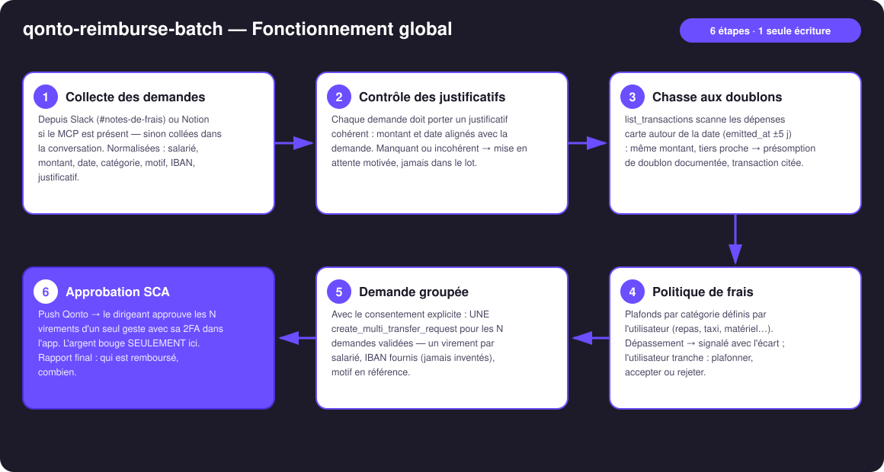
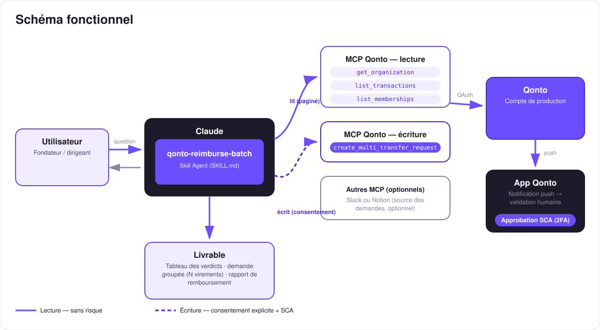

N remboursements de frais, trois contrôles chacun, une seule approbation SCA — fini le tableur.
Les salariés avancent les frais — resto client, taxi, petit matériel — et le remboursement traîne des semaines dans un tableur. Personne n'aime relancer, personne n'aime vérifier. Le skill fait les deux (tous les exemples de cette doc sont inventés) :
Canal Slack ou base Notion si le MCP est présent — sinon collées dans la conversation. Le cœur reste 100 % Qonto.
Justificatif cohérent (montant/date) · pas un doublon d'une dépense carte (transaction citée) · politique de frais respectée.
Les N demandes validées → une seule create_multi_transfer_request : N virements en attente, IBAN jamais inventés.
Push Qonto → le dirigeant approuve tout le lot avec sa 2FA dans l'app. L'argent ne bouge que là.
| Prérequis | Détail | Obligatoire |
|---|---|---|
| Compte Qonto production | Le skill s'adapte à toute organisation — get_organization d'abord, zéro donnée en dur | ✅ |
| Pays | Universel (SEPA) : virements SEPA en EUR — tous les pays Qonto (FR, DE, ES, IT, AT, NL, BE, PT). IBAN hors SEPA ou devise ≠ EUR → demande en attente, annoncé clairement | ℹ️ détecté |
| MCP Qonto connecté | Connecteur officiel (claude.ai / Claude Desktop), login OAuth | ✅ |
| IBAN des salariés | Fournis par les demandes ou une fiche salariés — le skill n'invente jamais un IBAN ; sans IBAN la demande reste en attente | ✅ |
| Politique de frais | Plafonds par catégorie (repas, taxi, matériel…) définis une fois par l'utilisateur ; sans politique, annoncé — les autres contrôles tournent quand même | ⭕ recommandé |
| Slack ou Notion (MCP) | Source des demandes, détectée dynamiquement ; sinon mode dégradé : demandes collées dans la conversation | ⭕ optionnel |

emitted_at ±5 j, pas settled_atlist_memberships → signalé, pas bloqué (les prestataires existent) · pagination ≤ 50 partout
Le modèle de sécurité, pas une limitation : la lecture est sans risque ; l'écriture exige le consentement explicite dans la conversation et ne produit qu'une demande. Seule la SCA (2FA) du titulaire, dans l'app Qonto, déplace l'argent — les N virements d'un geste, ou refus en un tap. Ni Claude ni le MCP ne le peuvent.
| Contrôle | Source | Issue possible |
|---|---|---|
| Justificatif | Pièce/référence jointe à la demande — montant et date confrontés à la demande | ✅ cohérent · ⚠️ manquant ou incohérent → en attente, motif précis |
| Doublon | list_transactions : dépenses carte (emitted_at ±5 j, même montant, tiers proche) + virements de remboursement récents (références « NDF ») | ❌ présomption documentée (transaction citée) → hors du lot, l'utilisateur tranche |
| Politique de frais | Plafonds par catégorie définis par l'utilisateur | ⚠️ dépassement signalé avec l'écart → plafonner / accepter / rejeter |
| Demande | Montant | Contrôles | Verdict |
|---|---|---|---|
| Repas client | 84,00 € | justificatif ✓ · pas de doublon · sous plafond | ✅ dans le lot |
| Taxi aéroport | 32,50 € | justificatif ✓ · pas de doublon · sous plafond | ✅ dans le lot |
| Écran portable | 129,00 € | déjà réglé par carte entreprise le 03/06 (transaction citée) | ❌ rejeté — preuve fournie |
Résultat : une demande groupée de 2 virements dans l'app Qonto, prête à approuver d'un seul geste.
| Sortie | Format | Quand |
|---|---|---|
| Réponse dans la conversation | Tableaux markdown : verdicts (demande · contrôles · verdict), contenu du lot, mises en attente | Toujours — c'est la base |
| Demande groupée Qonto | N virements en attente (section Demandes), résumé du lot dans la note, visible à l'approbation SCA | À chaque lot validé |
| Rapport de remboursement | Récap markdown (qui · combien · pourquoi rejeté, preuve) — ou artifact HTML si l'hôte affiche les fichiers | Après approbation (statut via list_requests) |
La démo ≤ 3 min jointe à la PR suit le storyboard : problème → collecte & contrôles → verdicts (1 doublon rejeté, transaction citée à l'écran) → approbation groupée SCA filmée sur téléphone → rapport final. Toutes les demandes de la démo sont inventées. Le script détaillé de tournage est conservé en interne (hors dépôt).
| Idée | Effort | Note |
|---|---|---|
| Verdict posté dans le thread Slack de chaque demande | Faible | Multi-MCP optionnel — s'active si le MCP Slack est présent |
| Rapprochement post-exécution (pointage des virements passés) | Faible | Réutilise list_transactions + les références « NDF » |
| OCR des justificatifs joints (montant/date extraits) | Moyen | Renforce le contrôle n°1 sur données sales |
Plafonds par équipe via list_teams | Faible | Politiques différenciées commercial / tech / direction |
| Export comptable mensuel des remboursements | Moyen | Se combine avec qonto-accountant-handoff |
decline_request après chaque test (request_type: "multi_transfers", pluriel)